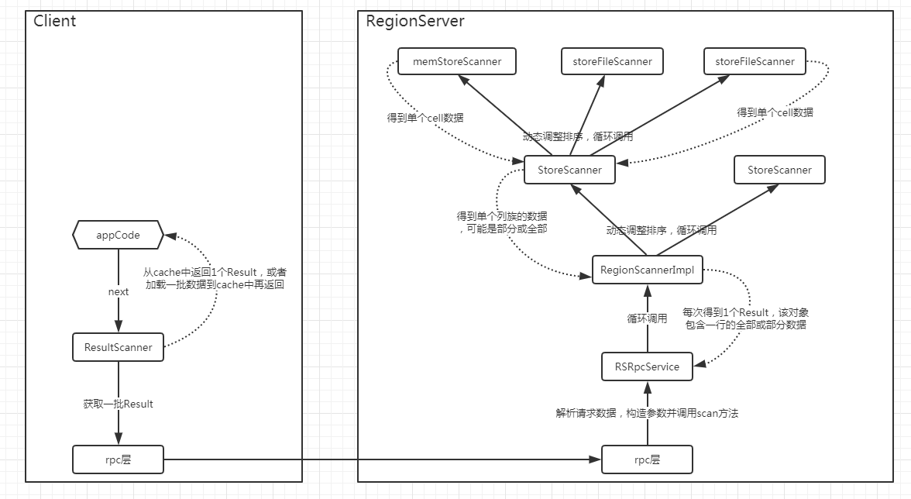
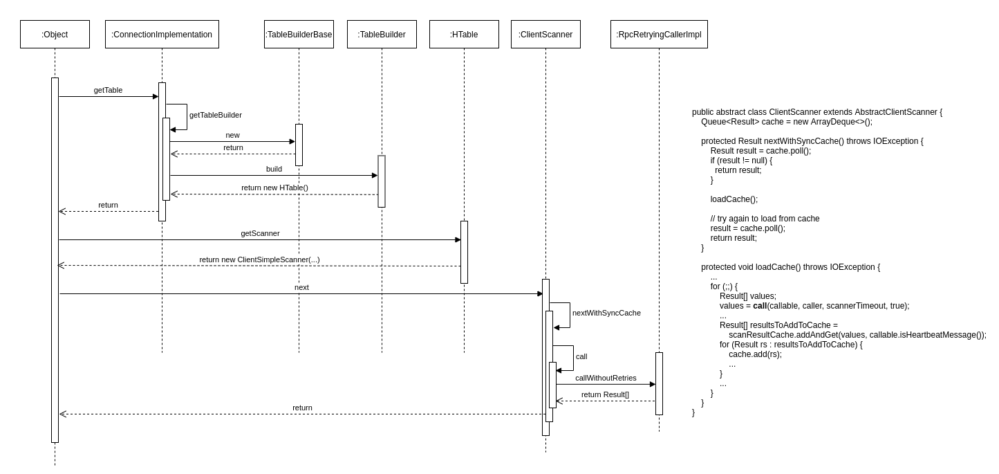
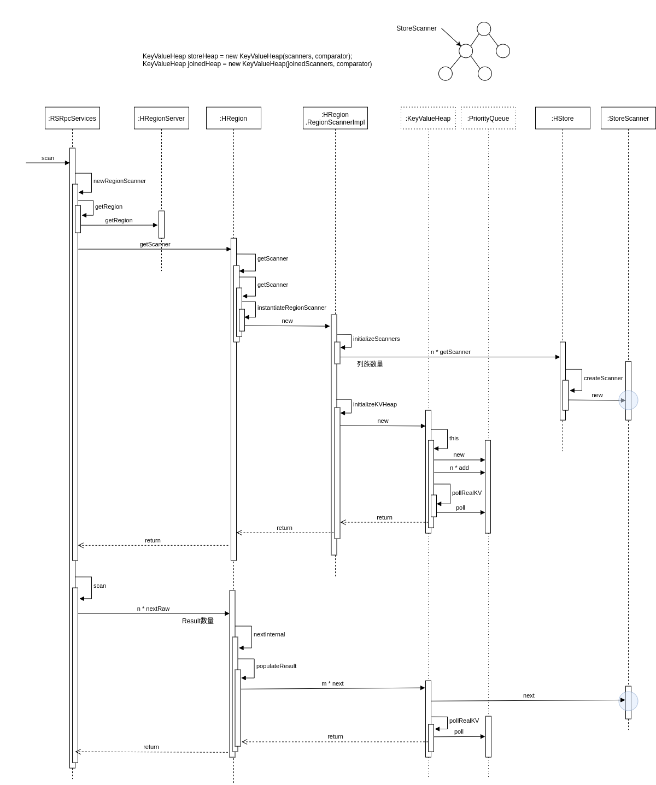
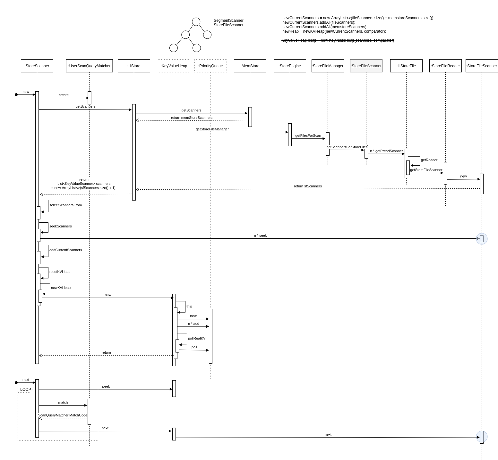
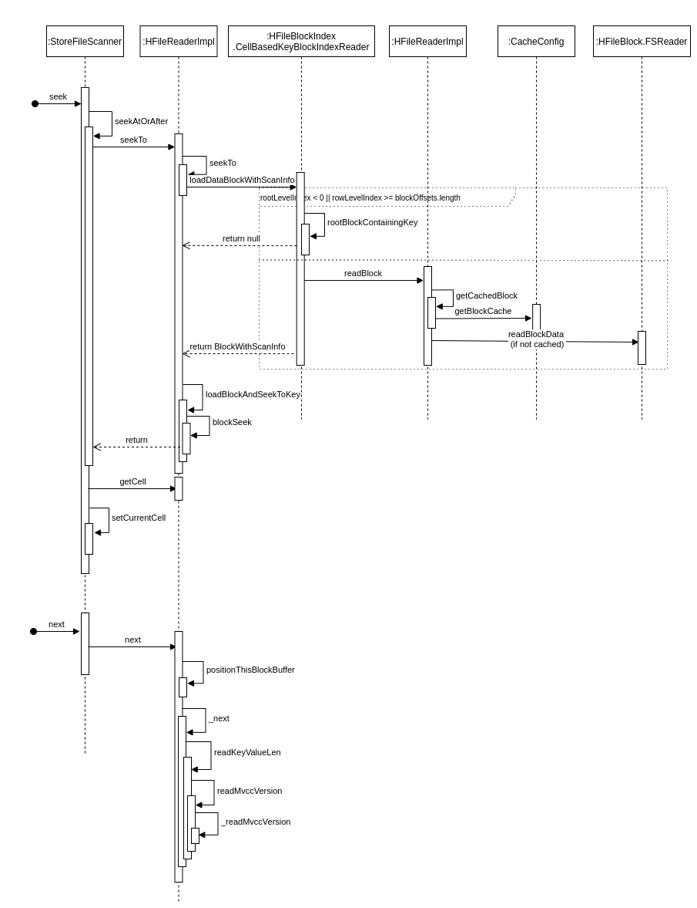

Scan涉及到的模块说明
Scan 操作的RPC消息结构
|
|
Scan 操作的流程介绍

scan过程总体上是分层处理的，与存储上的组织方式一致，脉络比较清晰；
具体来说，就是region -> store -> hfile/memstore，分别都有对应的scanner实现进行数据读取；
scan请求本身设置的条件，以及server和table层面的一些参数限制，会根据需要分布在不同层次的scanner中进行处理；
HBase Client的流程

- 客户端首先会根据配置文件中zookeeper地址连接zookeeper，并读取
/<hbase-rootdir>/meta-region-server节点信息，该节点信息存储HBase元数据（hbase:meta）表所在的RegionServer地址以及访问端口等信息。用户可以通过zookeeper命令(get /<hbase-rootdir>/meta-region-server)查看该节点信息。 - 根据hbase:meta所在RegionServer的访问信息，客户端会将该元数据表加载到本地并进行缓存。然后在表中确定待检索rowkey所在的RegionServer信息。
- 根据数据所在RegionServer的访问信息，客户端会向该RegionServer发送真正的数据读取请求。
HBase RegionServer的流程
RegionScanner

- 创建指定的各个列族对应的storeScanner，如果未指定则是全部列族；
- storeScanner创建过程中，会根据startrow参数，seek到对应cell；
- 将这些storeScanner放入一个heap中，heap为优先级队列，比较器的compare方法中比较的是KeyValueScanner所peek到的cell大小；
- 全部放入到heap（因为heap是小根堆，所以一定有序），poll方法得到最小的storeScanner，并将其赋值给current
- 然后调用current的next方法，获取一行的全部cell，获取完成后seek到下一行；
- 再将current放入到heap中，形成新的顺序；
- 再不断重复poll，add方法，直到新的行大于或等于r3。
StoreScanner

- StoreScanner的数据驱动方式与RegionScanner类似，也是使用heap和current去进行控制；
- 除了数据获取之外，该类比较重要的1个部分是数据的检查，相关逻辑封装在ScanQueryMatcher中；
- ScanQueryMatcher中主要包含2个组件：DeleteTracker和ColumnTracker，前者负责处理delete逻辑，后者负责检查当前cell的column、version及value等是否符合要求；
- 另外，在getScanners的过程中会根据keyRange、timeRange、bloomBlock等对storeFile进行过滤，以减少数据的读取；
StoreFileScanner

- storeFileScanner是真正涉及到hfile数据读取的地方，会根据rowKey，基于内存中indexBlock的数据定位到具体的dataBlock位置，以block为单位进行读取；
- 读取后的block数据在内存中以ByteBuffer的形式存在，而blockSeek方法会将这个ByteBuffer的position推动到合适位置的过程；
- 接下来，会读取一个cell的数据作为返回，使上层的storeScanner能够据此对各个storeFileScanner进行排序；
- 值得一提的是，实际实现中，还存在lazySeek的优化，大致原理是根据hfile中存储的最小time，返回一个假的cell，如果该cell都不能排在前面，那就不需要关心真实的cell是什么了，等到该cell能够排在最前面的时候，再进行realSeek，这个机制对于各个hfile按时间存在明显分界并且主要读取近期数据的场景，可以有效减少实际的数据读取量；
注意：
很多博客会会说StoreFileScanner和MemStoreScanner，实际上自HBase2.0.0开始HBASE-17655，MemStoreScanner 和 SnapshotScanner均被移除了。目前实际意义上的MemStoreScanner是由DefaultMemStore和CompositeImmutableSegment共同实现的。